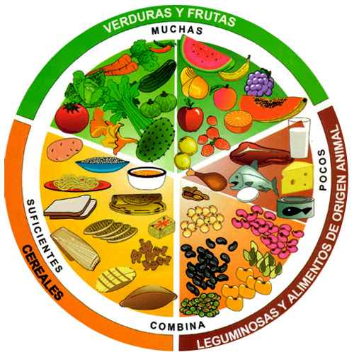
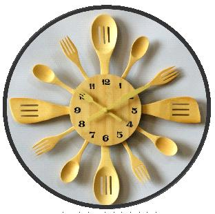
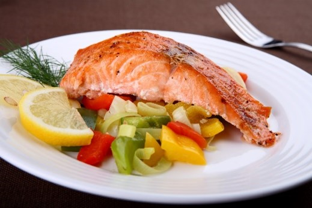
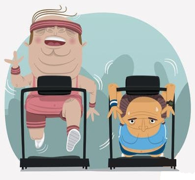

Plan alimentario
El plan alimentario de cada paciente debe ser individualizado y expedido por un experto en nutrición.

Un plan de alimentación para la diabetes es una guía que dice qué tipo de alimentos deben comer y en qué cantidad durante cada comida.

Los principios nutricionales del diabético, son los mismos que en los no diabéticos.
1. La proporción de calorías aportada por los principales nutrientes son:
- Carbohidratos: 55%
- Proteínas: 15%
- Grasas: 30%
2. Restringir grasa saturada (grasa animal) a menos del 10%, ácidos grasos poli insaturados hasta 10% y el resto de ácidos grasos preferiblemente mono insaturados (aceite vegetal).
3. Recomendar el consumo de carbohidratos en forma de azucares no refinados.

4. Asegurar alimentos ricos en fibras (Cereales integrales, frijoles, frutas).
5. Asegurar alimentos ricos en vitaminas, minerales(vegetales).
En los pacientes con DM tipo 2 el Plan Alimentario debe tener las siguientes características:
1. Consumo total de calorías que lleve al paciente a su peso ideal.
2. Durante un plan de reducción de peso, se debe suplementar con vitaminas y minerales.
Enfermedad renal
Los ejercicios físicos combinados con la dieta y los medicamentos disminuye la glucemia, ayuda a mantener el peso ideal, aumenta la capacidad de trabajar, disminuye los riesgos cardiovasculares y aumentan la sensación de bienestar.

Su indicación ha de ser por un examen físico completo, fondo de ojo, examen neurológico, cardiovascular, incluyendo ECG.
No se puede permitir un ejercicio que sobrepase el 75% de la frecuencia cardíaca máxima.
Nunca iniciar ejercicios durante periodos de descontrol
- Llevar identificación de diabéticos, que advierta la posibilidad de hipoglucemia.
- Esté alerta de esa posibilidad, incluso horas después de haber concluido el ejercicio.
- Tener a la mano algún carbohidrato de absorción inmediata.
- Evitar deshidratación.
Una rutina de actividad física comprensiva incluye tres tipos de actividades:
- Ejercicio aeróbico
- Entrenamiento de fuerza
- Ejercicios de flexibilidad
Caminar es una excelente manera de empezar.
Puede comenzar caminando 10 minutos al día e ir aumentando a medida que mejora su condición física.
Trate de hacer 30 minutos de ejercicio aeróbico de intensidad moderada a vigorosa por lo menos 5 días a la semana.
Realice actividad física al menos tres días a la semana y evite dejar de hacer ejercicio 2 días seguidos.
Si no tiene actividad física puede comenzar con 5 a 10 minutos al día y cada semana aumente un poco mas la intensidad.
También se recomienda
- Caminar rápidamente (al aire libre o bajo techo en una caminadora)
- Montar bicicleta al aire libre o bajo techo en una bicicleta estacionaria
- Nadar o hacer ejercicio aeróbico en agua
- Hacer jardinería de manera moderada.
